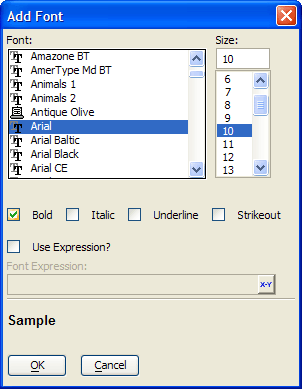

Font Dialog
The Font Dialog allows you specify a font face, point size, and font attributes. In addition, it allows you to specify an expression that will return alternative font specifications, depending on other conditions.

Select a type face from the Font list.
Select a size from the Size list.
Select any of the Bold, Italic, Underline, and Strikeout font attributes that you want to use.
Optionally, enable Use Expression? and enter an expression that resolves to a font specification in the format: FontName [, Size [, Attributes ]]. FontName is any value from the Font list. Size is any integer value from the Size list. Attributes is any combination of the letters B, I, U, and S.
Click OK to save your inputs and return to the calling dialog.
Supported By
Alpha Five Version 8 and Above
Limitations
Desktop applications only.
See Also